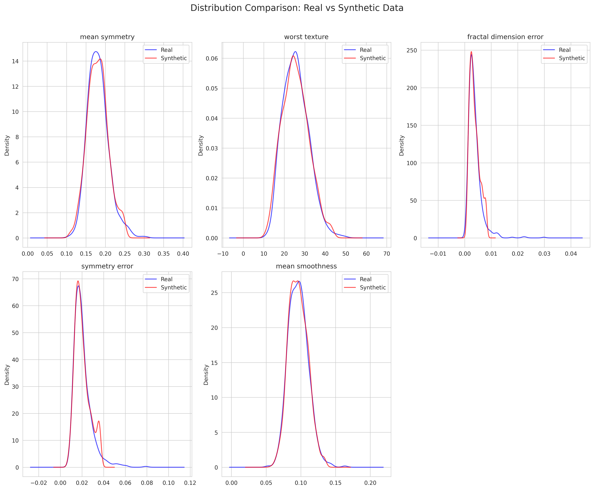
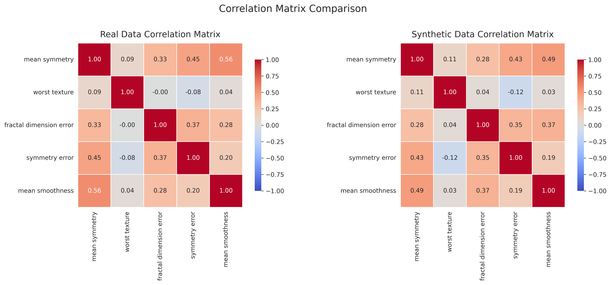

Dataset Overview
| Metric |
Real Data |
Synthetic Data |
| Number of rows |
569 |
1000 |
| Number of columns |
31 |
31 |
| Memory usage |
0.13 MB |
0.24 MB |
Generator Information
Method: gaussian, Samples: 1000, Random State: None
Overall Quality Metrics
| Metric |
Value |
Interpretation |
| real_data_size |
569.0000 |
Acceptable |
| synthetic_data_size |
569.0000 |
Acceptable |
| size_ratio |
1.0000 |
Acceptable |
| num_numerical_columns |
30.0000 |
Acceptable |
| num_categorical_columns |
0.0000 |
Acceptable |
| avg_ks_statistic |
0.0561 |
Distributions are very similar |
| avg_jensen_shannon_dist |
0.1563 |
Acceptable |
| avg_mean_relative_error |
0.0296 |
Excellent |
| avg_std_relative_error |
0.1230 |
Good |
| correlation_mean_difference |
0.0512 |
Excellent |
| correlation_max_difference |
0.2141 |
Acceptable |
| privacy_risk |
0.0000 |
Acceptable |
| utility_score |
0.9463 |
Excellent |
| statistical_similarity |
0.9463 |
Acceptable |
| privacy_score |
1.0000 |
Excellent |
| quality_score |
0.9598 |
Excellent |
Numerical Column Metrics
Column: mean radius
| Metric |
Value |
| mean_real |
14.1273 |
| mean_synthetic |
13.9363 |
| mean_relative_error |
0.0135 |
| std_real |
3.5240 |
| std_synthetic |
3.4597 |
| std_relative_error |
0.0182 |
| min_real |
6.9810 |
| min_synthetic |
6.9810 |
| max_real |
28.1100 |
| max_synthetic |
21.9000 |
| Kolmogorov-Smirnov statistic |
0.0422 |
| Kolmogorov-Smirnov p-value |
0.6926 |
| Jensen-Shannon distance |
0.1567 |
Column: mean texture
| Metric |
Value |
| mean_real |
19.2896 |
| mean_synthetic |
19.0616 |
| mean_relative_error |
0.0118 |
| std_real |
4.3010 |
| std_synthetic |
4.4728 |
| std_relative_error |
0.0399 |
| min_real |
9.7100 |
| min_synthetic |
9.7100 |
| max_real |
39.2800 |
| max_synthetic |
30.2450 |
| Kolmogorov-Smirnov statistic |
0.0650 |
| Kolmogorov-Smirnov p-value |
0.1803 |
| Jensen-Shannon distance |
0.1278 |
Column: mean perimeter
| Metric |
Value |
| mean_real |
91.9690 |
| mean_synthetic |
90.6887 |
| mean_relative_error |
0.0139 |
| std_real |
24.2990 |
| std_synthetic |
23.8860 |
| std_relative_error |
0.0170 |
| min_real |
43.7900 |
| min_synthetic |
43.7900 |
| max_real |
188.5000 |
| max_synthetic |
147.4950 |
| Kolmogorov-Smirnov statistic |
0.0492 |
| Kolmogorov-Smirnov p-value |
0.4965 |
| Jensen-Shannon distance |
0.1660 |
Column: mean area
| Metric |
Value |
| mean_real |
654.8891 |
| mean_synthetic |
628.5184 |
| mean_relative_error |
0.0403 |
| std_real |
351.9141 |
| std_synthetic |
310.7239 |
| std_relative_error |
0.1170 |
| min_real |
143.5000 |
| min_synthetic |
143.5000 |
| max_real |
2501.0000 |
| max_synthetic |
1326.3000 |
| Kolmogorov-Smirnov statistic |
0.0580 |
| Kolmogorov-Smirnov p-value |
0.2943 |
| Jensen-Shannon distance |
0.1930 |
Column: mean smoothness
| Metric |
Value |
| mean_real |
0.0964 |
| mean_synthetic |
0.0965 |
| mean_relative_error |
0.0013 |
| std_real |
0.0141 |
| std_synthetic |
0.0137 |
| std_relative_error |
0.0252 |
| min_real |
0.0526 |
| min_synthetic |
0.0580 |
| max_real |
0.1634 |
| max_synthetic |
0.1337 |
| Kolmogorov-Smirnov statistic |
0.0281 |
| Kolmogorov-Smirnov p-value |
0.9782 |
| Jensen-Shannon distance |
0.0955 |
Column: mean compactness
| Metric |
Value |
| mean_real |
0.1043 |
| mean_synthetic |
0.1028 |
| mean_relative_error |
0.0150 |
| std_real |
0.0528 |
| std_synthetic |
0.0476 |
| std_relative_error |
0.0995 |
| min_real |
0.0194 |
| min_synthetic |
0.0244 |
| max_real |
0.3454 |
| max_synthetic |
0.2286 |
| Kolmogorov-Smirnov statistic |
0.0527 |
| Kolmogorov-Smirnov p-value |
0.4080 |
| Jensen-Shannon distance |
0.1543 |
Column: mean concavity
| Metric |
Value |
| mean_real |
0.0888 |
| mean_synthetic |
0.0878 |
| mean_relative_error |
0.0117 |
| std_real |
0.0797 |
| std_synthetic |
0.0718 |
| std_relative_error |
0.0993 |
| min_real |
0.0000 |
| min_synthetic |
0.0007 |
| max_real |
0.4268 |
| max_synthetic |
0.2824 |
| Kolmogorov-Smirnov statistic |
0.0703 |
| Kolmogorov-Smirnov p-value |
0.1202 |
| Jensen-Shannon distance |
0.1735 |
Column: mean concave points
| Metric |
Value |
| mean_real |
0.0489 |
| mean_synthetic |
0.0482 |
| mean_relative_error |
0.0146 |
| std_real |
0.0388 |
| std_synthetic |
0.0382 |
| std_relative_error |
0.0147 |
| min_real |
0.0000 |
| min_synthetic |
0.0000 |
| max_real |
0.2012 |
| max_synthetic |
0.1545 |
| Kolmogorov-Smirnov statistic |
0.0791 |
| Kolmogorov-Smirnov p-value |
0.0569 |
| Jensen-Shannon distance |
0.1664 |
Column: mean symmetry
| Metric |
Value |
| mean_real |
0.1812 |
| mean_synthetic |
0.1814 |
| mean_relative_error |
0.0016 |
| std_real |
0.0274 |
| std_synthetic |
0.0266 |
| std_relative_error |
0.0279 |
| min_real |
0.1060 |
| min_synthetic |
0.1112 |
| max_real |
0.3040 |
| max_synthetic |
0.2464 |
| Kolmogorov-Smirnov statistic |
0.0439 |
| Kolmogorov-Smirnov p-value |
0.6426 |
| Jensen-Shannon distance |
0.1497 |
Column: mean fractal dimension
| Metric |
Value |
| mean_real |
0.0628 |
| mean_synthetic |
0.0628 |
| mean_relative_error |
0.0004 |
| std_real |
0.0071 |
| std_synthetic |
0.0065 |
| std_relative_error |
0.0767 |
| min_real |
0.0500 |
| min_synthetic |
0.0500 |
| max_real |
0.0974 |
| max_synthetic |
0.0787 |
| Kolmogorov-Smirnov statistic |
0.0457 |
| Kolmogorov-Smirnov p-value |
0.5928 |
| Jensen-Shannon distance |
0.1312 |
Column: radius error
| Metric |
Value |
| mean_real |
0.4052 |
| mean_synthetic |
0.3600 |
| mean_relative_error |
0.1114 |
| std_real |
0.2773 |
| std_synthetic |
0.1820 |
| std_relative_error |
0.3438 |
| min_real |
0.1115 |
| min_synthetic |
0.1115 |
| max_real |
2.8730 |
| max_synthetic |
0.8487 |
| Kolmogorov-Smirnov statistic |
0.0756 |
| Kolmogorov-Smirnov p-value |
0.0776 |
| Jensen-Shannon distance |
0.1797 |
Column: texture error
| Metric |
Value |
| mean_real |
1.2169 |
| mean_synthetic |
1.1748 |
| mean_relative_error |
0.0346 |
| std_real |
0.5516 |
| std_synthetic |
0.4963 |
| std_relative_error |
0.1003 |
| min_real |
0.3602 |
| min_synthetic |
0.3602 |
| max_real |
4.8850 |
| max_synthetic |
2.4341 |
| Kolmogorov-Smirnov statistic |
0.0475 |
| Kolmogorov-Smirnov p-value |
0.5439 |
| Jensen-Shannon distance |
0.1413 |
Column: perimeter error
| Metric |
Value |
| mean_real |
2.8661 |
| mean_synthetic |
2.6140 |
| mean_relative_error |
0.0880 |
| std_real |
2.0219 |
| std_synthetic |
1.3496 |
| std_relative_error |
0.3325 |
| min_real |
0.7570 |
| min_synthetic |
0.7581 |
| max_real |
21.9800 |
| max_synthetic |
5.9835 |
| Kolmogorov-Smirnov statistic |
0.0668 |
| Kolmogorov-Smirnov p-value |
0.1581 |
| Jensen-Shannon distance |
0.1884 |
Column: area error
| Metric |
Value |
| mean_real |
40.3371 |
| mean_synthetic |
29.5441 |
| mean_relative_error |
0.2676 |
| std_real |
45.4910 |
| std_synthetic |
19.7354 |
| std_relative_error |
0.5662 |
| min_real |
6.8020 |
| min_synthetic |
6.8020 |
| max_real |
542.2000 |
| max_synthetic |
86.2000 |
| Kolmogorov-Smirnov statistic |
0.1142 |
| Kolmogorov-Smirnov p-value |
0.0012 |
| Jensen-Shannon distance |
0.1910 |
Column: smoothness error
| Metric |
Value |
| mean_real |
0.0070 |
| mean_synthetic |
0.0069 |
| mean_relative_error |
0.0197 |
| std_real |
0.0030 |
| std_synthetic |
0.0025 |
| std_relative_error |
0.1689 |
| min_real |
0.0017 |
| min_synthetic |
0.0022 |
| max_real |
0.0311 |
| max_synthetic |
0.0126 |
| Kolmogorov-Smirnov statistic |
0.0527 |
| Kolmogorov-Smirnov p-value |
0.4080 |
| Jensen-Shannon distance |
0.1474 |
Column: compactness error
| Metric |
Value |
| mean_real |
0.0255 |
| mean_synthetic |
0.0248 |
| mean_relative_error |
0.0280 |
| std_real |
0.0179 |
| std_synthetic |
0.0148 |
| std_relative_error |
0.1720 |
| min_real |
0.0023 |
| min_synthetic |
0.0030 |
| max_real |
0.1354 |
| max_synthetic |
0.0615 |
| Kolmogorov-Smirnov statistic |
0.0633 |
| Kolmogorov-Smirnov p-value |
0.2049 |
| Jensen-Shannon distance |
0.1727 |
Column: concavity error
| Metric |
Value |
| mean_real |
0.0319 |
| mean_synthetic |
0.0306 |
| mean_relative_error |
0.0405 |
| std_real |
0.0302 |
| std_synthetic |
0.0223 |
| std_relative_error |
0.2601 |
| min_real |
0.0000 |
| min_synthetic |
0.0000 |
| max_real |
0.3960 |
| max_synthetic |
0.0825 |
| Kolmogorov-Smirnov statistic |
0.0808 |
| Kolmogorov-Smirnov p-value |
0.0485 |
| Jensen-Shannon distance |
0.1469 |
Column: concave points error
| Metric |
Value |
| mean_real |
0.0118 |
| mean_synthetic |
0.0116 |
| mean_relative_error |
0.0179 |
| std_real |
0.0062 |
| std_synthetic |
0.0057 |
| std_relative_error |
0.0793 |
| min_real |
0.0000 |
| min_synthetic |
0.0000 |
| max_real |
0.0528 |
| max_synthetic |
0.0253 |
| Kolmogorov-Smirnov statistic |
0.0404 |
| Kolmogorov-Smirnov p-value |
0.7418 |
| Jensen-Shannon distance |
0.1314 |
Column: symmetry error
| Metric |
Value |
| mean_real |
0.0205 |
| mean_synthetic |
0.0200 |
| mean_relative_error |
0.0257 |
| std_real |
0.0083 |
| std_synthetic |
0.0069 |
| std_relative_error |
0.1710 |
| min_real |
0.0079 |
| min_synthetic |
0.0079 |
| max_real |
0.0790 |
| max_synthetic |
0.0360 |
| Kolmogorov-Smirnov statistic |
0.0475 |
| Kolmogorov-Smirnov p-value |
0.5439 |
| Jensen-Shannon distance |
0.1685 |
Column: fractal dimension error
| Metric |
Value |
| mean_real |
0.0038 |
| mean_synthetic |
0.0037 |
| mean_relative_error |
0.0289 |
| std_real |
0.0026 |
| std_synthetic |
0.0018 |
| std_relative_error |
0.3018 |
| min_real |
0.0009 |
| min_synthetic |
0.0009 |
| max_real |
0.0298 |
| max_synthetic |
0.0080 |
| Kolmogorov-Smirnov statistic |
0.0562 |
| Kolmogorov-Smirnov p-value |
0.3294 |
| Jensen-Shannon distance |
0.1581 |
Column: worst radius
| Metric |
Value |
| mean_real |
16.2692 |
| mean_synthetic |
16.0843 |
| mean_relative_error |
0.0114 |
| std_real |
4.8332 |
| std_synthetic |
4.7685 |
| std_relative_error |
0.0134 |
| min_real |
7.9300 |
| min_synthetic |
7.9300 |
| max_real |
36.0400 |
| max_synthetic |
27.4600 |
| Kolmogorov-Smirnov statistic |
0.0475 |
| Kolmogorov-Smirnov p-value |
0.5439 |
| Jensen-Shannon distance |
0.1930 |
Column: worst texture
| Metric |
Value |
| mean_real |
25.6772 |
| mean_synthetic |
25.4452 |
| mean_relative_error |
0.0090 |
| std_real |
6.1463 |
| std_synthetic |
6.6703 |
| std_relative_error |
0.0853 |
| min_real |
12.0200 |
| min_synthetic |
12.0200 |
| max_real |
49.5400 |
| max_synthetic |
42.6800 |
| Kolmogorov-Smirnov statistic |
0.0510 |
| Kolmogorov-Smirnov p-value |
0.4511 |
| Jensen-Shannon distance |
0.1264 |
Column: worst perimeter
| Metric |
Value |
| mean_real |
107.2612 |
| mean_synthetic |
105.9981 |
| mean_relative_error |
0.0118 |
| std_real |
33.6025 |
| std_synthetic |
33.2375 |
| std_relative_error |
0.0109 |
| min_real |
50.4100 |
| min_synthetic |
50.4100 |
| max_real |
251.2000 |
| max_synthetic |
187.3350 |
| Kolmogorov-Smirnov statistic |
0.0545 |
| Kolmogorov-Smirnov p-value |
0.3674 |
| Jensen-Shannon distance |
0.1699 |
Column: worst area
| Metric |
Value |
| mean_real |
880.5831 |
| mean_synthetic |
842.3807 |
| mean_relative_error |
0.0434 |
| std_real |
569.3570 |
| std_synthetic |
486.7671 |
| std_relative_error |
0.1451 |
| min_real |
185.2000 |
| min_synthetic |
185.2000 |
| max_real |
4254.0000 |
| max_synthetic |
1937.0500 |
| Kolmogorov-Smirnov statistic |
0.0721 |
| Kolmogorov-Smirnov p-value |
0.1042 |
| Jensen-Shannon distance |
0.2107 |
Column: worst smoothness
| Metric |
Value |
| mean_real |
0.1324 |
| mean_synthetic |
0.1328 |
| mean_relative_error |
0.0031 |
| std_real |
0.0228 |
| std_synthetic |
0.0214 |
| std_relative_error |
0.0609 |
| min_real |
0.0712 |
| min_synthetic |
0.0725 |
| max_real |
0.2226 |
| max_synthetic |
0.1901 |
| Kolmogorov-Smirnov statistic |
0.0404 |
| Kolmogorov-Smirnov p-value |
0.7418 |
| Jensen-Shannon distance |
0.1272 |
Column: worst compactness
| Metric |
Value |
| mean_real |
0.2543 |
| mean_synthetic |
0.2515 |
| mean_relative_error |
0.0108 |
| std_real |
0.1573 |
| std_synthetic |
0.1437 |
| std_relative_error |
0.0867 |
| min_real |
0.0273 |
| min_synthetic |
0.0361 |
| max_real |
1.0580 |
| max_synthetic |
0.6270 |
| Kolmogorov-Smirnov statistic |
0.0351 |
| Kolmogorov-Smirnov p-value |
0.8740 |
| Jensen-Shannon distance |
0.1583 |
Column: worst concavity
| Metric |
Value |
| mean_real |
0.2722 |
| mean_synthetic |
0.2712 |
| mean_relative_error |
0.0035 |
| std_real |
0.2086 |
| std_synthetic |
0.1998 |
| std_relative_error |
0.0421 |
| min_real |
0.0000 |
| min_synthetic |
0.0002 |
| max_real |
1.2520 |
| max_synthetic |
0.7855 |
| Kolmogorov-Smirnov statistic |
0.0369 |
| Kolmogorov-Smirnov p-value |
0.8336 |
| Jensen-Shannon distance |
0.1334 |
Column: worst concave points
| Metric |
Value |
| mean_real |
0.1146 |
| mean_synthetic |
0.1148 |
| mean_relative_error |
0.0019 |
| std_real |
0.0657 |
| std_synthetic |
0.0677 |
| std_relative_error |
0.0300 |
| min_real |
0.0000 |
| min_synthetic |
0.0000 |
| max_real |
0.2910 |
| max_synthetic |
0.2910 |
| Kolmogorov-Smirnov statistic |
0.0580 |
| Kolmogorov-Smirnov p-value |
0.2943 |
| Jensen-Shannon distance |
0.1488 |
Column: worst symmetry
| Metric |
Value |
| mean_real |
0.2901 |
| mean_synthetic |
0.2916 |
| mean_relative_error |
0.0051 |
| std_real |
0.0619 |
| std_synthetic |
0.0569 |
| std_relative_error |
0.0795 |
| min_real |
0.1565 |
| min_synthetic |
0.1565 |
| max_real |
0.6638 |
| max_synthetic |
0.4192 |
| Kolmogorov-Smirnov statistic |
0.0650 |
| Kolmogorov-Smirnov p-value |
0.1803 |
| Jensen-Shannon distance |
0.1517 |
Column: worst fractal dimension
| Metric |
Value |
| mean_real |
0.0839 |
| mean_synthetic |
0.0838 |
| mean_relative_error |
0.0020 |
| std_real |
0.0181 |
| std_synthetic |
0.0162 |
| std_relative_error |
0.1057 |
| min_real |
0.0550 |
| min_synthetic |
0.0550 |
| max_real |
0.2075 |
| max_synthetic |
0.1230 |
| Kolmogorov-Smirnov statistic |
0.0422 |
| Kolmogorov-Smirnov p-value |
0.6926 |
| Jensen-Shannon distance |
0.1301 |
Data Visualizations
Distributions Comparison

Correlation Matrix Comparison

Data Samples
Real Data Sample
| mean radius |
mean texture |
mean perimeter |
mean area |
mean smoothness |
mean compactness |
mean concavity |
mean concave points |
mean symmetry |
mean fractal dimension |
radius error |
texture error |
perimeter error |
area error |
smoothness error |
compactness error |
concavity error |
concave points error |
symmetry error |
fractal dimension error |
worst radius |
worst texture |
worst perimeter |
worst area |
worst smoothness |
worst compactness |
worst concavity |
worst concave points |
worst symmetry |
worst fractal dimension |
target |
| 13.74 |
17.91 |
88.12 |
585.0 |
0.07944 |
0.06376 |
0.02881 |
0.01329 |
0.1473 |
0.05580 |
0.2500 |
0.7574 |
1.573 |
21.47 |
0.002838 |
0.01592 |
0.01780 |
0.005828 |
0.01329 |
0.001976 |
15.34 |
22.46 |
97.19 |
725.9 |
0.09711 |
0.1824 |
0.1564 |
0.06019 |
0.2350 |
0.07014 |
1 |
| 13.37 |
16.39 |
86.10 |
553.5 |
0.07115 |
0.07325 |
0.08092 |
0.02800 |
0.1422 |
0.05823 |
0.1639 |
1.1400 |
1.223 |
14.66 |
0.005919 |
0.03270 |
0.04957 |
0.010380 |
0.01208 |
0.004076 |
14.26 |
22.75 |
91.99 |
632.1 |
0.10250 |
0.2531 |
0.3308 |
0.08978 |
0.2048 |
0.07628 |
1 |
| 14.69 |
13.98 |
98.22 |
656.1 |
0.10310 |
0.18360 |
0.14500 |
0.06300 |
0.2086 |
0.07406 |
0.5462 |
1.5110 |
4.795 |
49.45 |
0.009976 |
0.05244 |
0.05278 |
0.015800 |
0.02653 |
0.005444 |
16.46 |
18.34 |
114.10 |
809.2 |
0.13120 |
0.3635 |
0.3219 |
0.11080 |
0.2827 |
0.09208 |
1 |
| 12.91 |
16.33 |
82.53 |
516.4 |
0.07941 |
0.05366 |
0.03873 |
0.02377 |
0.1829 |
0.05667 |
0.1942 |
0.9086 |
1.493 |
15.75 |
0.005298 |
0.01587 |
0.02321 |
0.008420 |
0.01853 |
0.002152 |
13.88 |
22.00 |
90.81 |
600.6 |
0.10970 |
0.1506 |
0.1764 |
0.08235 |
0.3024 |
0.06949 |
1 |
| 13.62 |
23.23 |
87.19 |
573.2 |
0.09246 |
0.06747 |
0.02974 |
0.02443 |
0.1664 |
0.05801 |
0.3460 |
1.3360 |
2.066 |
31.24 |
0.005868 |
0.02099 |
0.02021 |
0.009064 |
0.02087 |
0.002583 |
15.35 |
29.09 |
97.58 |
729.8 |
0.12160 |
0.1517 |
0.1049 |
0.07174 |
0.2642 |
0.06953 |
1 |
Synthetic Data Sample
| mean radius |
mean texture |
mean perimeter |
mean area |
mean smoothness |
mean compactness |
mean concavity |
mean concave points |
mean symmetry |
mean fractal dimension |
radius error |
texture error |
perimeter error |
area error |
smoothness error |
compactness error |
concavity error |
concave points error |
symmetry error |
fractal dimension error |
worst radius |
worst texture |
worst perimeter |
worst area |
worst smoothness |
worst compactness |
worst concavity |
worst concave points |
worst symmetry |
worst fractal dimension |
target |
| 13.303514 |
18.115289 |
86.680505 |
546.752645 |
0.085083 |
0.133063 |
0.081532 |
0.045253 |
0.195549 |
0.065498 |
0.380533 |
0.526769 |
3.597473 |
28.516493 |
0.004115 |
0.027497 |
0.043945 |
0.012740 |
0.020128 |
0.005702 |
14.826810 |
19.253560 |
99.677850 |
695.939650 |
0.117977 |
0.325351 |
0.300273 |
0.109380 |
0.324322 |
0.099081 |
0 |
| 10.441422 |
14.233560 |
66.069675 |
298.676928 |
0.110560 |
0.055847 |
0.024937 |
0.019233 |
0.162454 |
0.059984 |
0.297552 |
1.304733 |
1.926448 |
17.708303 |
0.005674 |
0.006323 |
0.003391 |
0.007699 |
0.028012 |
0.001558 |
11.460256 |
20.382131 |
71.816422 |
339.234031 |
0.139760 |
0.088670 |
0.082727 |
0.069512 |
0.263446 |
0.064852 |
1 |
| 9.705687 |
17.687744 |
61.669814 |
271.218482 |
0.082412 |
0.044074 |
0.024483 |
0.007150 |
0.165962 |
0.062434 |
0.111500 |
1.028969 |
0.816901 |
6.802000 |
0.003913 |
0.006247 |
0.007326 |
0.003993 |
0.016032 |
0.001750 |
10.085570 |
25.158981 |
64.714436 |
286.534635 |
0.114134 |
0.116897 |
0.178190 |
0.055743 |
0.308127 |
0.080504 |
1 |
| 7.125484 |
13.120192 |
44.028358 |
143.500000 |
0.082233 |
0.038159 |
0.010480 |
0.000000 |
0.111200 |
0.073876 |
0.111500 |
0.882755 |
0.885557 |
6.802000 |
0.005420 |
0.009669 |
0.013627 |
0.001995 |
0.017244 |
0.003659 |
7.930000 |
18.066200 |
50.410000 |
185.200000 |
0.112703 |
0.094195 |
0.068878 |
0.000000 |
0.211667 |
0.089147 |
1 |
| 21.900000 |
22.935152 |
147.495000 |
1326.300000 |
0.093887 |
0.139548 |
0.180998 |
0.141404 |
0.233274 |
0.057252 |
0.501224 |
0.919973 |
5.983500 |
86.200000 |
0.003978 |
0.016478 |
0.043431 |
0.014664 |
0.011667 |
0.002550 |
27.460000 |
30.062807 |
187.335000 |
1937.050000 |
0.119824 |
0.331926 |
0.489350 |
0.229319 |
0.329644 |
0.080560 |
0 |